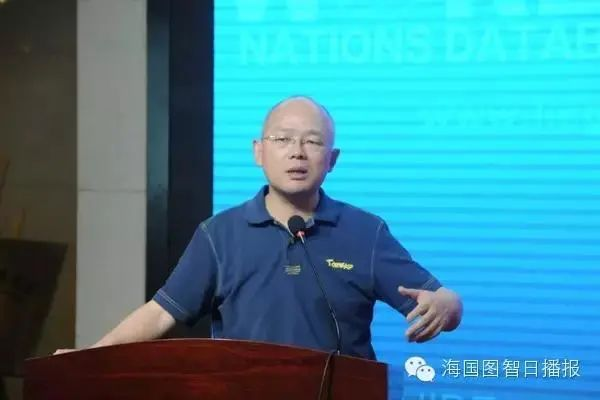

收录于合集

嘉宾介绍
唐世平： 复旦大学国际关系与公共事务学院特聘教授。过去五年间，他在国际政治理论和政治学理论领域出版3部英文专著，均由国际顶级或一流出版社出版，并均得到相关领域著名学者高度赞誉，2015年他获得了ISA(国际关系研究协会)最佳著作奖，可能这是第一位荣获此荣誉的亚洲学者。他在国际SSCI刊物上发表有重要影响的论文十多篇，其中8篇发表于国际顶级或一流期刊，通常是第一位在这些期刊上发表文章的中国学者。发表的刊物包括： World Politics (比较政治、国际政治顶级期,2011年影响因子排名第一）, Philosophy of the Social Sciences (社会科学哲学领域的旗舰杂志), European Journal of International Relations, Security Studies, Review of International Studies, International Studies Review (均为国际政治顶级或一流杂志）。他在《中国社会科学》发表3篇论文，在中文核心刊物发表论文30余篇，一篇中文文章被新华社《领导参阅》全文连载。
蒲晓宇： 美国内华达大学政治学系助理教授、美国俄亥俄州立大学博士、普林斯顿－哈佛大学中国与世界项目博士后。他的主要研究兴趣为国际关系理论、政治心理学、政治社会学、中国外交等。他在国际著名期刊和国内主流国际关系类期刊发表了不少力作，包括 International Security, China Quarterly, The Chinese Journal of International Politics 以及《世界经济与政治》和《外交评论》等。
袁正清： 中国社会科学院世界经济与政治研究所博士生导师、研究员，《世界经济与政治》编辑部主任、副主编。他的主要研究领域为国际政治理论、国际组织、中国外交。他的主要专著有《国际政治理论的社会学转向：建构主义研究》（上海人民出版社2005年），译著有《国际社会中的国家利益》（上海人民出版社2012年版）。他曾经在《世界经济与政治》、《欧洲研究》、《当代世界》、 Japanese Journal of Political Science 等杂志上发表文章。
陈志瑞： 外交学院《外交评论》杂志执行主编、编审，曾任中国社会科学院《欧洲研究》编辑部主任、北京大学《国际政治研究》执行主编。他曾经主编的著作有《国际体系与国内政治：新古典现实主义的探索》、《取舍：美国战略调整与霸权护持》、《开放的国际社会：国际关系研究中的英国学派》，并曾经在《世界经济与政治》、《教学与研究》等杂志上发表文章。
陈定定： 海国图智研究院院长、澳门大学助理教授，2007年在美国芝加哥大学获得政治学博士学位。他主要研究中国外交、东亚安全、人权、国际关系理论、公共舆论、定量方法。他曾经在 Democratization, International Security, Chinese Journal of International Politics, Journal of Contemporary China, The Washington Quarterly, China: An International Journal 等国际著名杂志上发表论文，并且有较高的引用率。
如何在国内外顶级IR杂志上发表高质量文章
陈定定老师： 大家好！非常感谢大家在中秋节来参加我们网络圆桌讨论会议，今天的主题是怎样发表高质量的文章，我们非常荣幸地请到了几位学术界的大牛和编辑来指导我们。我们首先邀请唐老师用大概十分钟讲讲他个人的经验和对学生的要求。欢迎唐老师！
唐世平老师
唐世平老师： 谢谢定定。我主要讲五个方面的问题。我只讲英文刊物的发表，因为大家现在大家发中文文章到相对比较好的杂志应该都不是什么非常难的问题。
第一点，英文文章的发表上，我觉得大家首先 要调整心态，要有比较坚定的意志 ，应该百折不饶。投稿被拒是非常普遍的。就现在基本来说，如果你投稿到一个杂志，如果你能够拿到一个修改后再重投的结果，我觉得已经是非常好了。所以基本上大家不要希望投稿就直接被接收，这种机会是非常小的。
第二点我觉得是 对杂志的定位 。当你写的文章的时候，首先要想到这个文章可以投到哪一类杂志，这是你必须要知道的。最好不要文章写完了再考虑杂志问题。你首先要对自己的文章想投到哪个领域的哪一个档次的杂志有所把握，甚至要对这个杂志的基本的偏好都要有所了解。所以我认为一开始写文章的时候就需要读过很多杂志的文章，从而对不同杂志的定位及它们基本的水准有一定的理解。
第三点就是 对自己水准的定位 。对自己水准的定位，我认为可以从以下几个方面来看。首先是你的想法或者你研究的问题重不重要、有多重要。第二个是你的想法是不是比较妙，或者说比较有意思？第三是所谓的证据（我们讲的可能通常是比较实证的文章）。证据可以是定量的、定性的、模拟的等等。接下来就是证据做出的result是什么样的，如果你做出来的结果看起来和你的讨论内容不太符合，文章就有比较大的问题。关于水平的定位我觉得还一点是英语写作水平。这不仅只是一个语法的问题，而且还要求你怎么能够把你的想法表达得流畅清楚，让大家觉得读起来比较顺畅。所以非常重要的一点是，你一定要让一个读者或者是一个审阅的人觉得阅读你的文章不费劲，而且比较顺畅自然。如果审稿人对你的文章印象深刻，那么你的投稿就比较有希望获得一个正面的回应。
接下来我会讲第四点。这一点我们以前不好意思讲，那就是审阅者的选择。现在很多英文杂志都允许你建议避开某些审阅者，当然你也可以建议说你希望什么审阅者来审稿。通常编辑一般不一定愿意满足你挑选的审阅者。但是如果你希望某些审阅者不要来审这篇文章，通常编辑还是会考虑你的建议的。因为的确会出现conflict of ego 的现象。比方说你批评一个人很厉害，他有可能看到文章就给拒了。所以审阅者的问题是非常值得大家谨慎考虑的。包括我自己过去都有这样的缺点，就是有时候批评过于直截了当，不够温和。比方说你批评一个人错误的观点，你不要直接说他错误，而是说他可能错误，这样会比较委婉，更容易让别人接受。
最后一个问题就是，尽管定定老师组织这个讲座是一个非常好的公共事业，但是大家不要对讲座本身的影响期望太高。首先是因为想要发表比较好的杂志确实是很难，并且还有运气的成分。如果你不是来自一个非常有名的学校或者师从比较好的老师，或者没有比较铁的社交圈，那么你确实会面临非常多的困难。所以我觉得比较现实的情况是，包括海外留学的在内，如果你两年能发一篇甚至五年能发两篇已经是不错的成绩了。如果在国内念书，我觉得五年出一篇也不错。我就先讲到这里。
陈定定老师： 非常感谢唐老师非常有价值的五点建议，尤其是最后一点对年轻的学者和学生的建议非常有帮助。我们投稿不要急于求成，还是以质量为主。唐老师和蒲老师都在美国，两位老师晚上来为我们做分享非常辛苦。好那么下面我们请蒲晓宇老师介绍一下他担任期刊的评审，以及他自己投稿的经验。
蒲晓宇老师
蒲晓宇老师： 各位老师同学大家中秋好，谢谢定定兄的邀请。唐老师刚刚讲的非常好了，我就补充几点关于国际期刊发表的几点看法。
我准备讲选题、杂志定位的问题，并且从审稿者的角度讲讲哪些须要老师同学们注意的一些方面。
我特别赞同唐老师刚才讲的，咱们中国的学者、学生在国际期刊上发表文章很不容易。 投稿的过程也可能是一个不断试错的过程。 拒稿会给大家提供很多经验。我推荐李连江老师在网上发的一篇文章，他讲了我们华人学者写英文刊物须要注意的方面。
我先说选题的问题。一篇文章其实最重要的地方就是选题的研究的新意在什么地方，理论和学术贡献的是什么。这既有学术意义，也有关系到我们的投稿是否能成功。 温特教授曾经给学生们讲写博士论文要注意的方面，他提出一个非常简洁的一个要求：something we don’t already know。 这个看起来非常简单，但是做博士论文或者写文章要达到这个要求并不容易。对于审稿人而言这也是第一位的考虑因素。如果一篇文章有新意，能说清楚学术贡献在什么地方。那么即使文章在数据、方法或其他细节上有问题，审稿者也会给你提出修改的建议。如果你的学术贡献不清楚，好的杂志就很容易拒稿，哪怕文章在经验实证上做得很好，也不容易发表。所以说这就是选题、研究意义、研究问题非常重要，唐老师刚刚也提到了这一点。
定位的问题我就简单讲讲。在投稿的时候，对杂志的定位和自己文章本身的定位的契合度要非常得高，就是你自己的文章在什么样的水平上，它如何符合这个杂志的定位。很多杂志它的定位、偏好非常不同，要把这个搞清楚。比如 International Security 除了理论和学术之外还强调文章的战略和政策的意义。如果一篇文章研究一个非洲小国，那就很难发IS。再比如 International Theory ，他很强调理论的东西,实证经验的文章就难以发表。一定要搞清楚杂志的定位，不然就会南辕北辙。
第三，我强调一下怎么做文献回顾， 怎么评论你的同行 。这个确实要注意，用语要客气点。这并不是耍滑头，而是有两个方面的原因。第一，大家做学术都很难，都不容易，而且同行圈子特别小。比方说全世界只有一万个人做IR，跟你做同一个topic的学者可能就只有一百个。第二，做学术的学者都不是傻子。说话用语客气点，这也没什么坏处，对发表是有好处的。从实际的角度来说，有一个需要注意的就是你引用的作者都是潜在的审稿者，所以如果把引用的学者都批得体无完肤，或者是用语太不客气，这对你的审稿的过程确实不利。所以我们在文献回顾或者评价同行的时候客气点还是有好处的。
最后，发文章确实是特别不容易的过程，也是一个不断尝试的过程。
我就先讲这么几点，也期待与其他各位学者、同行在之后的交流环节相互切磋。我就先讲这么多。谢谢！
陈定定老师： 非常感谢蒲晓宇老师的精彩分享。那我们接下来请《外交评论》主编陈志瑞老师从一个编辑的角度谈谈他们希望看到什么样的文章，对学生的投稿有什么建议，从编辑的角度帮我们避免走弯路。欢迎陈志瑞老师！

陈志瑞老师
陈志瑞老师： 我将首先介绍下《外交评论》的基本情况，然后谈谈我所理解的当前国关研究中存在的几个问题，也是我们审稿中碰到的问题。最后我想和大家讨论怎么去解决这些问题。
我觉得大家可能都了解《外交评论》这份杂志，以前叫《外交学院学报》，2005年之后改为现在的名字。它是外交学院的学报，同时也是中国国际关系学会的会刊。这些年来在大家的关心和支持下《外交评论》取得了一些进步。我们最近更新了网路平台，大家有兴趣向我们投稿的话可以在这个平台注册进行投稿。
首先我想介绍下我们现在的发稿范围和关注的主要问题领域。从发稿的范围来说，我们现在比较关注大外交、大国际关系。国际问题的讨论已经比较泛化，我们也要随之改变来思考、研究国际问题。这意味着我们在选题的时候要有更宽的眼界，在不同的层面对国际关系问题进行研究。这都可以纳入我们研究的视野，《外交评论》的发稿范围是可以这么广的。
我们关注的问题领域主要有以下几个： 第一，我们最关注的是中国外交及相关的问题；第二是国别和地区的重大热点问题；第三是国际关系理论前沿问题；第四是非传统安全问题与全球治理；第五是国际关系与国际法问题。补充一点就是，在国别和地区研究中我们比较重视亚太及中国的周边地区。我们对其他地区的关注会少一点，但是并不是说不可以发表这方面文章。关于国际关系理论前沿的问题这一点，国际关系理论发展非常快，中外文文献之间是存在一个对接的问题的。因此我们觉得对于一份中文的杂志而言我们还是有这种责任和必要去关注一下国际关系理论前沿问题的。
接下来我谈一下第二个问题，那就是现在国关研究的问题。首先，现在的研究中，国际形势政策导向研究太多，基础研究、理论探讨偏少。第二，研究受大众媒体化潮流影响日益明显。第三，各类课题和项目研究居多，出于个人的兴趣的研究偏少；第四，刊物增加、版面偏多，但是整体刊发的水平不容乐观。发表平台增多降低了发表文章的难度，让大家更有信心去发表文章。同时，我们不仅要争取在国内刊物发表文章，更要在学术上走出去，到国外的一些主流的刊物进行发表。当然，这个要从长计议。
这几个问题也带来了一个后果，那就是稿源情况不理想，在数量上不是很多，质量也不尽人意。这一方面是由于上述几个问题造成的，另一方面也我们期刊也在反思我们自己的问题。我们也在思考期刊在哪些方面可以做得更好。
接下来我谈谈我近来的解决思路和想法。第一，我觉得约稿还是很重要的。第二，我觉得我们需要各种各样的途径增强沟通。比如说像今天这样的讲座就是我就借这个机会把我们这些情况、想法告诉大家。大家也可以通过微信群、采编平台，或者是直接给我本人写邮件等方式来谈谈你们的想法。相互沟通非常重要。我们也在探索一些办法来解决这些问题。由于国内的国际关系研究的政策导向非常明显，所以我觉得我们的研究须要提高战略眼光，加强提前预判。至于怎么策划、组织这些前瞻性的研究，我们在这方面想再多下点功夫。希望有机会能与大家多交流、请教。
我就先说这么多，谢谢大家！
陈定定老师： 非常感谢陈志瑞老师从一个资深主编的角度给我们年轻的后辈提供的有用的建议。我们也能够感觉到陈老师还是非常欢迎投稿的。不过首先大家写的文章要过关，可以先给其他老师过过目，保证质量后再去跟陈老师联系，这样效果可能更好些。接下来由《世界经济与政治》的主编袁正清老师给我们讲讲他们的期刊有什么要求，以及对我们学生有什么建议。欢迎袁正清老师！
袁正清老师
袁正清老师： 谢谢定定！今天是中秋节，首先祝大家节日愉快。我先对《世界经济与政治》杂志做一个简要的介绍。我们这个杂志是在七九年创刊的，到现在也有三十多年了。从目前来看，《世界经济与政治》在中文期刊里面还是名列前茅的，也感谢大家的支持和关心。对于我们这份杂志，我想主要是我自己的一个想法就是想把这个杂志主要归结在以下方面，第一是理论性与战略性之间的平衡，第二是国内和国际之间的平衡，第三是政治和经济之间的平衡，第四是定量和定性之间的平衡。
我也同意刚才几位老师讲的有关杂志的审稿的一些建议与想法。《世界经济与政治》在审稿上的采用的也是 匿名评审的方式 。在匿名评审之前有一个初审，初审通过以后文章由匿名评审专家来做匿名评审。等匿名评审意见出来以后我们会将信息反馈给这个作者。我们评审意见大概有三种情况：第一种是不采用，第二是修改后再审，第三个是修改后采用。
在初审的过程中，就像刚才几位老师所讲到的，我觉得我们在看稿子时 最重要的就是文章的idea，就是你的想法 ，是否能够把文章创新的地方能够一下子呈现出来，要把文章有创新性的地方、学术的价值、现实的价值要很好地表达出来。
其他的问题的话刚才几位老师讲了，特别是陈志瑞老师讲了目前的国际关系研究的情况，以及我们目前办杂志的所面临的一些困惑和问题。我们杂志目前的主要问题还是好的稿件不足。所以在这里还是希望大家多支持我们的国际关系的期刊和杂志。
稍后有问题的话我们还可以继续交流。谢谢大家!
问答环节
问题1： 陈老师和袁老师可以说说你们的投稿接受率吗？
陈志瑞老师： 我们没有明确的统计接受率的问题，大概不会很高。但是我们会善待每一篇来稿。每篇文章都是作者认真写的，都是心血之作。有些文章可能会与我们的要求有点差距，或是与我们的风格不吻合，但每篇文章投过来后我们都会认真对待。审稿的过程和刚才袁老师介绍的是差不多的。
袁正清老师： 《世界经济与政治》的接受率大约在百分之十左右。
问题2： 如果稿子第一轮没有录用，后面如何修改、补救？如果评审人的建议与自己想法不一致，坚持自己是否合适？
唐世平老师： 审稿的意见跟你的不符合非常正常。如果对方提出了五点意见你通通都回绝了，或者回绝了四点，那这篇文章重审很难成功。所以我建议五点意见的话你至少要正面回应三点，承认审稿意见有道理才行。
蒲晓宇老师： 我赞同唐老师的观点。作者确实要认真对待评审的意见。你不必百分之百的都回应每一条意见，但是最主要的几条一定要回应好，这个非常重要。有的杂志会把几种评审意见进行归纳，告诉你根据我们编辑部的意见哪几条意见尤其重要。那么尤其重要的几条就一定是需要回应的。
陈定定老师: 要认真对待评审的各种意见，哪怕是无理的。一般编辑都会站在评审那边，除了个别情况。
问题3： 请问一下老师们觉得对于本科生、研究生来多尝试发表文章是不是一个好的选择？
唐世平老师： 我特别理解本科生想发文章，但是我高度地不鼓励你们发文章。因为你们现在处在一个学习的阶段。你们如果想要通过文章来吸引老师的关注，更有帮助的可能是好的research proposal。绝大多数的本科生是没有水平写出好文章的，所以我不觉得非要用那个发文章来说服你的未来的老师说我有潜力。
袁正清老师： 我同意唐老师刚才所说的，大学生投稿还是要比较慎重。因为大学生最主要还是要去打先打好基础。我也希望大学生在投稿之前做好前期的准备工作。
问题4： 现在主流刊物在实证研究中更喜欢中国的双边外交、多边外交还是其他的地方研究或者其他领域呢？
陈志瑞老师： 对于学习、写作或者做研究，最重要的是通过阅读和思考发现有价值的问题。我刚才前面提到我们现在要从大外交、大国际关系这样一个广阔的领域里面来发现和思考问题，而且最主要的是发现一个真正的问题。我们现在常常是觉得有些来稿是没有问题或者没有一个真正的问题。文章提出的可能是个伪问题，或者根本没有站在前人研究的基础上或者的巨人的肩膀上，这是现在的一个问题。
问题5： 各位老师，像我这种研究日本，主要工作语言是日语的学生，当然也没有放弃英文，如何着手英文文章写作，如何与英语类同行切磋？
蒲晓宇老师： 任何一个学生、学者要找你自己的独特优势。比如说，你可以找英语世界研究日本、中日关系的学者来开展交流合作，来发挥你既懂中文又懂日本的这个特长，这也是一个渠道。这是我的建议。
问题6： 请问一下各位老师，第一作者，作者单位，文章质量等因素在录用方面的权重排序大概是怎么样的，此外，投稿到录用的话，大概需要准备多长时间？
陈志瑞老师： 国内是根据每个刊物的刊期来定的。季刊的审稿周期会长一些，月刊会短一些。国内一般来说审稿周期在两到三个月，一般来说两到三个月还没有告诉你录用，你就可以准备向下一家投稿了。国外的一些主流刊物审稿周期会更长一点。从审稿的角度来说把关会更加全面，进一步提高文章的质量。
袁正清老师： 在审稿的过程中，内容摘要、introduction写得好坏非常重要。如果这两个部分写的不错，就可以让编者上钩。文章的开头非常重要。
问题7： 寻找合适的学术合作伙伴，是否可以被认为是发表英文文章的一个重要途径（尤其是语言问题，研究方法问题）？
唐世平老师： 我合作文章是比较少的。我觉得最伟大的作品都是自己写出来的，可以有一点合作，但是合作最多就是说有些证据或者数据上的。那种非常powerful、比较理论性的文章通常都是一个人写出来，至少我基本上是这么认为的。
蒲晓宇老师： 独著和合著可以都有一些，具体找合作者看互补性等多种因素。
问题8： 一般发表文章，往往是专门试图为某一家杂志投稿的（量身定做），正如唐世平老师刚才所说，在投稿之前，应该先知道自己应该向哪个杂志投稿。但这种情况不可避免，一旦稿子被某一家杂志拒掉，就无法再投第二家了，可能觉得难以符合任何口味。这种苦恼，应该如何处理？
唐世平老师： 可以找一个类似这个风格的杂志。比如说我之前也经历过文章被拒的情况，换了期刊之后审稿的过程都很顺利。两个不同杂志的风格是可能比较接近的，略有不同的侧重。通常不会说一篇文章只有一份杂志可投。如果你觉得这篇文章在这个领域的杂志都没的投了，可能就须要换一个领域。当然你也有可能需要考虑这篇文章是不是不值得发。这可能是比较难以接受的。
陈定定老师： 不要担心。我们一篇稿子第一次投CQ，最后被拒；然后修改投ISQ，现在被接受了。这也是有可能的，关键看修改质量。投稿要“脸皮厚”，被拒可能是件好事情。因为根据一项研究，一篇稿子被拒的次数和文章最后的质量和影响力是成正比的。这是有一定道理的，根据我个人的经验，拒稿后你能够得到很不错的修改建议。只要你认真虚心地对待建议，接受然后去修改文章，往往能够得到比较好的结果。你的文章还可以往上走，投到更好的期刊上，这可能也是一个比较不寻常的投稿顺序。
问题9： 是否可以推荐一些好的英文学术写作的参考书等等，因为感到学术英文跟日常英文还是有区别，总是很难达到优雅的感觉。
唐世平老师： 英文写作对于绝大部分外国人或者不是欧洲语言体系的学生来说确实是一个大的挑战，我觉得首先大家要学会欣赏文章。因为大部分外国学生只是表达了意思，但是做不到欣赏文章。所以我鼓励大家在读书的时候读文章的时候常发现文章写得美、写得漂亮之处。我的第二点体会就是，写到自己觉得不能更好的时候要把文章发给别人看，那么通常都会他们会提出一些意见。而且我认为一定要冷却一段时间看文章。两个星期以后再去看文章肯定会看出问题。而且你经常写完后要打印出来看，在电脑里看肯定是看不好的，因为很多连贯的东西需要斟酌。
陈定定老师： 写作英文可以参考这个网站：https://owl.english.purdue.edu/owl/section/1/2/。当然最关键还是多写，多修改。一天坚持写300字，一年后水平会突飞猛进。
问题10： 想请问老师们，现在IPE领域和IR领域的研究内容是否已经分化成两个非常独立的领域了？比如，像关于“对外直接投资和国际关系/外交”这样的topic，是不是不太会引起IR的期刊的兴趣、得要定位IPE方面的期刊？
袁正清老师： 我们杂志现在专门有一个IPE的栏目，会涉及到国际经济和政治之间关系的问题。
蒲晓宇: IPE、IRT和IS这三块儿是整个IR的几个支柱，所以IPE投一般的IR杂志和一些区域研究杂志，比如说 Pacific Review 应该都没有问题，从选题的角度是没有问题的，这个不用担心。这是我自己的观察。
陈志瑞： 中文国关刊物现在更多的是问题导向的，现在特别要注意是问题导向之下要考虑的是跨学科研究。或者是不同的理论、不同的方法、不同的路径的一种融合，而不要简单地被别把某个问题简单归结为IPE等。最重要的是你要去思考问题、理解问题、解决问题。
问题11： 想问下对于台湾问题研究相关的文章是否发国关期刊会会比较不容易些？可能由于政治敏感关系之类的原因。
陈志瑞老师： 我觉得这是一个非常有意思的问题。《外交评论》发表台湾问题研究的文章极少。倒不完全是因为政治敏感，主要是我们觉得台湾问题从根本上有时候甚至是一个而国内问题，所以我们有时候觉得问题领域上来说那不是那么合适。假如你从国际关系框架里面来讨论台湾问题，可以参考美利坚大学赵全胜老师的相关研究。
问题12: 国内外有没有什么小语种国关刊物，比如之前有位同学是学日语的，还有法语，西语的呢？另外，有些同学可能会在读研后，没有想清楚是否去做学术，选择先去其他机关，事业单位或企业工作的那一类，也就是说暂时出了学术圈，又想重新申博或考博的期间，身份是不是会比较尴尬，难以发文章？
陈定定老师： 小语种稍微吃亏点，因为主流刊物还是英文的。工作后读博的也很多啊，没有问题的。我这里补充一点，未来用中文发表文章可能会比英文文章影响更大。因为现在国外开始关注中文的文章，他们认为这是能够原汁原味真正反映中国的声音、代表中国的观点。用中文发表不一定吃亏，只要是你的文章质量高，就会得到关注，这是我的重点。
陈志瑞老师： 工作了以后再回炉读博士有时候我觉得也是非常好的。主要是看你读博士是出于什么动机和目的。假如以后要去做学术研究也许你以前的相关的工作经历对研究就很重要。我昨天的就碰到一个朋友，他马上要到驻外。他之前写了很多文章，但是总是觉得信心不足，希望通过出去走一走增加一些的真正实际的工作经验。我觉得实践经验是非常重要的。小语种的学生是有点吃亏的，因为发表的平台相对较少。但是首先恐怕作为一个中国留学生，首先可能还是要把中英文写好吧。从目前的这种网络发展的趋势来看我认为以后语言的边界的重要性可能会弱化。另外的我也觉得中文文献的地位会随着中国的发展而进一步提高。另外我们杂志英文版的在网上已经上线了，大家可以关注一下。
袁正清老师： 我们非常欢迎海外留学人员给我们杂志投稿，支持我们。
问题13： 对于研究生参加专业学术协会是否必要，怎样利用学术协会的活动来提升论文发表能力？
陈志瑞老师： 多参加学术活动肯定是会有帮助的。但是最重要的还是自己要去多看书、思考。目前我觉得国内的这些学会的讨论很多时候是以文会友，学术的深度还是有待于进一步提高。我更是主张学生要多请教老师，而且跟同行多切磋。我现在觉得微信群就是一个很好的途径。我们可以建立更小的微信群，就某一个问题而去讨论和切磋，这样会非常有帮助。
问题14： 跨学科理论借鉴或创新存在一个难点，比如社会学、经济学的研究层次或对象有特殊性，如何更好迁移或与IR结合，有哪些建议和心得?
陈志瑞老师： 这个问题很大。我觉得最重要的是融会贯通，而不是搬来就用。其次，可能更多的是在细节和层面上可以借鉴其他学科的方法，而不是大的框架。借鉴其他学科大的框架可能是比较困难的。从长远来说我们追求的是智慧地写作。在我看来，智慧地写作超越于一般的方法之上。
蒲晓宇老师： 不要为了借鉴而借鉴。在解决国关研究的问题时需要借鉴再借鉴，不然就造成概念泛滥。这是一个问题。还有一点，我觉得就是要注意国关学科与其它学科，比如社会学、心理学、经济学，我们的大背景不一样。我们的背景是政治背景，这个一定不能忽略。
陈定定老师： IR从诞生开始就是个非常跨学科的，我们借鉴了经济学、社会学、法学，甚至物理学等领域。首先我们要对其他学科要有深入的了解。如果并不了解，也谈不上什么跨学科。你不懂的话借来的也都是错误的知识。这也不用着急，我估计要再经过五到十年的修炼，这个应该是不成问题了。
问题15： 我想请教下各位老师的杂志是否接受一些世界政治比如偏比较政治类的文章。另外各位老师怎么看待文献综述类和评论文章（review article）。
陈志瑞老师： 我觉得没有问题，世界政治当然可以纳入进来。对文献综述，或者说学术评论，我们现在还在接受这类的文章。但是能跟以前还是有所不一样的。现在此类文章要有问题导向，要写得更扎实、更有深度。假如文章是问题导向，并且切少了这个时段国内外的相关的研究进展，并且最后又把你自己的思路和思考融入进去，那么这样的文章就更有价值。
袁正清老师： 我觉得综述的文章和评论性的文章，最好的写作是那些在这个问题领域里面最前沿的学者写出来的东西。
陈定定老师： review essay参考 World Politics ，不过不建议青年学生和学者写review essay至少等到35岁以后再写。
问题16： 我想问一下唐世平老师，如何长时间保持精力充沛投入学术当中？因为我看您每天有10小时以上在进行学术研究，怎么保证不犯困、不走神而保持专注？
唐世平老师： 气功肯定是有非常多的好处的，我希望大家都可以练一点，因为对精力可以有很大的帮助。内功的资料在我复旦的个人网页上都可以下载。大家只要照着练就行了，很简单，不需要太多的时间，关键在于坚持。内功我觉得二十到三十分钟足够了。这个主要是根据你练的状态和反应，不需要太关注时间，当然通常都会练上二十分钟。
排版 | 邱意雯